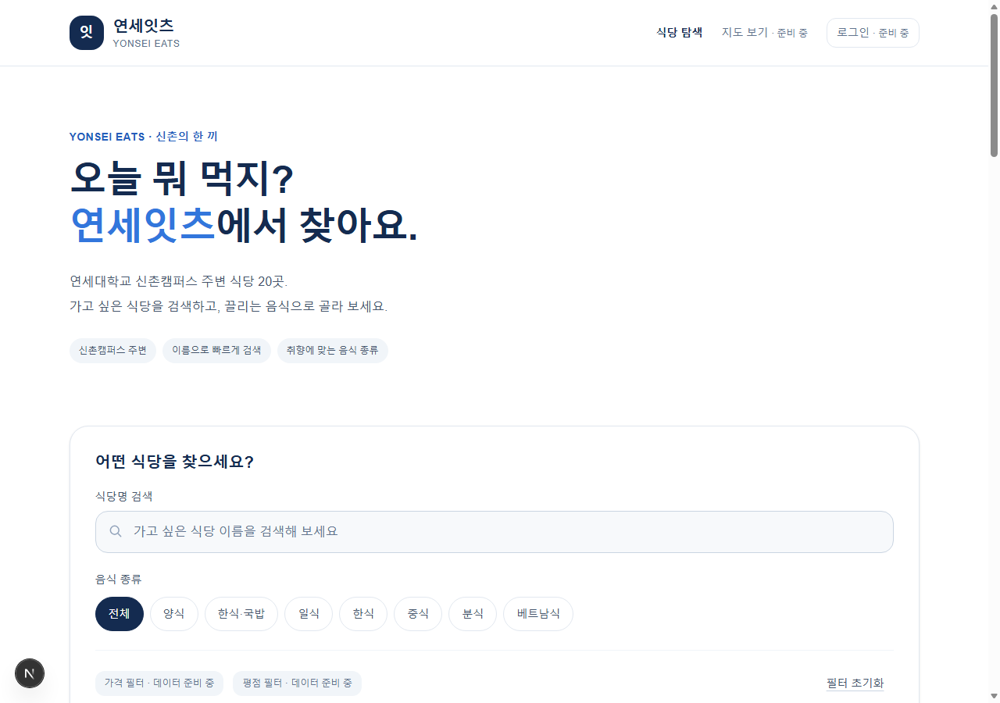
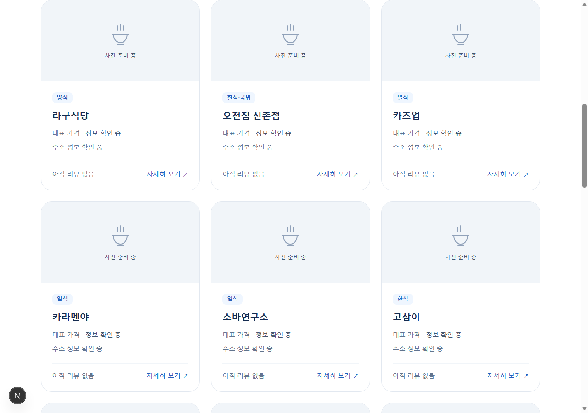
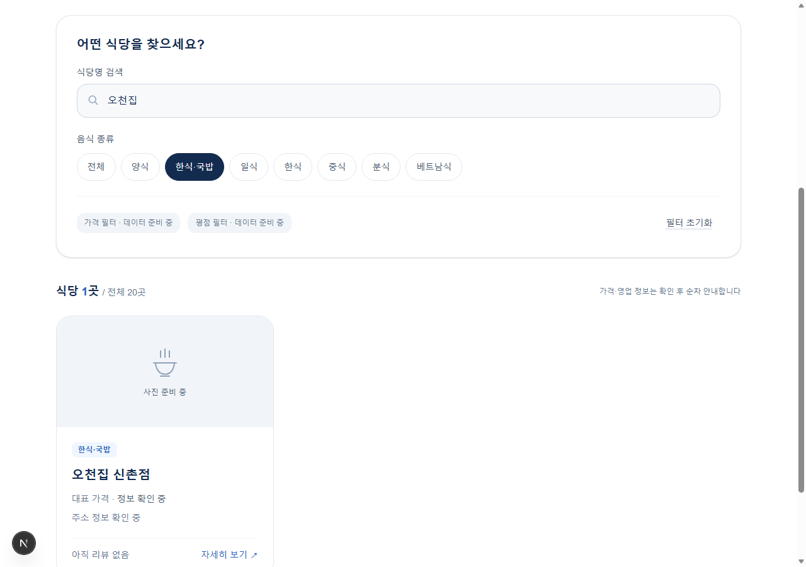
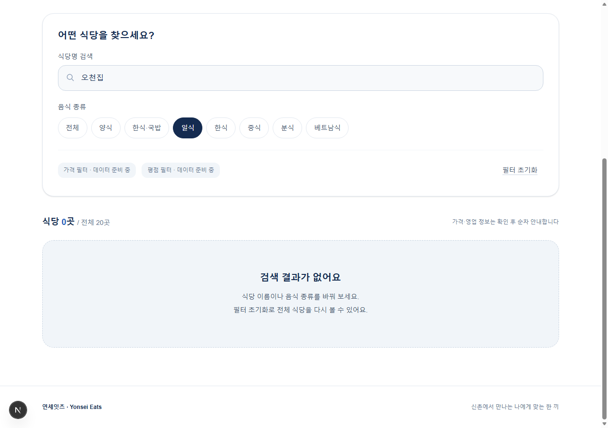
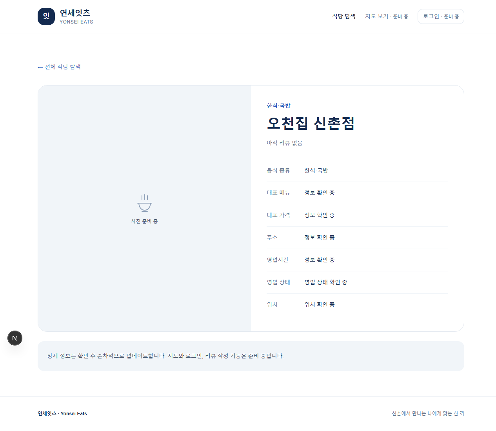
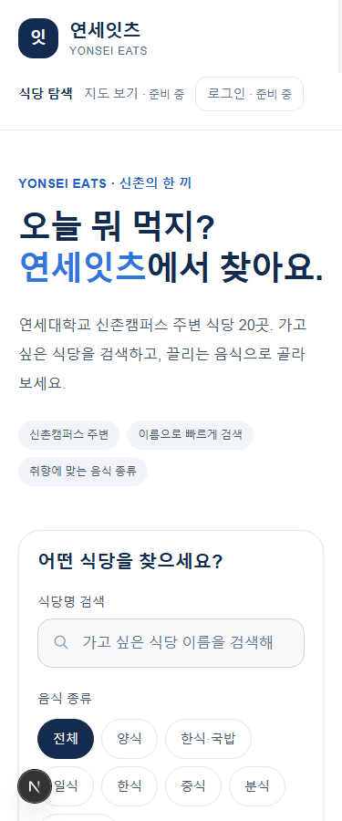
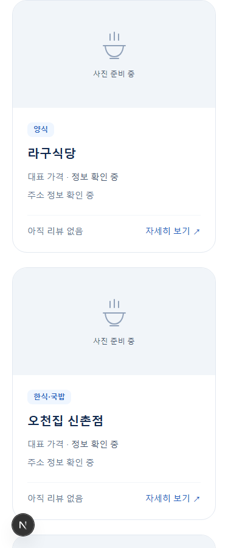
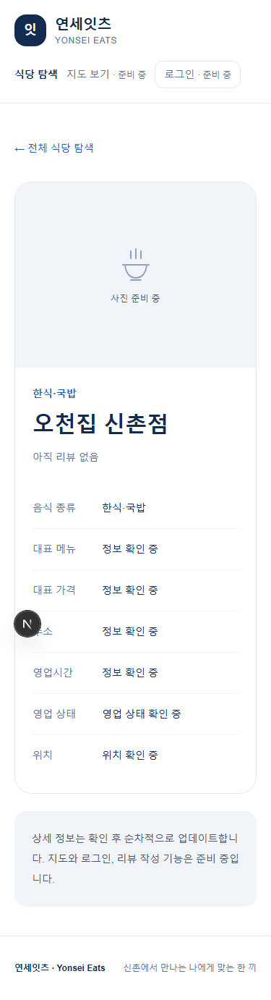

| 구분 | 내용 |
|---|---|
| 프로젝트 | 연세잇츠(Yonsei Eats) |
| 작성 기준일 | 2026년 10월 27일, 한국 시간 |
| 대상 단계 | Phase 1 — 로컬 데이터 기반 식당 탐색 UI |
| 완료 상태 | 요청한 Phase 1 기능 구현 완료. Phase 2 미착수 |
| 보고서 성격 | 현재 코드·실행 상태를 확인해 새로 작성한 보고서 |
| 실행 화면 | 현재 개발 서버에서 새로 캡처한 PC·모바일 화면 8장 |
연세대학교 신촌캠퍼스 주변에서 식사할 식당을 쉽게 찾도록, 승인된 식당 20곳을 탐색하는 반응형 웹 화면을 구현했다. 사용자는 식당 이름과 음식 종류로 목록을 좁히고, 카드를 눌러 기본 상세 정보를 볼 수 있다.
이번 단계의 범위는 프런트엔드 UI와 로컬 JSON 기반 탐색이다. 실제 DB·소셜 로그인·지도·리뷰·즐겨찾기를 연결한 서비스 완성을 의미하지 않는다.
| 요구사항 | 구현 내용 | 상태 |
|---|---|---|
| 메인 페이지 | 서비스명·소개·탐색 메뉴·검색·필터·식당 목록 | 완료 |
| 식당 카드 | 승인된 20곳 전체, 이름·종류·미확인 정보 안내 | 완료 |
| 식당명 검색 | 입력에 따른 이름 검색, 앞뒤 공백 정리·대소문자 무시 | 완료 |
| 음식 종류 | 원본 7개 분류와 전체 선택, 이름 검색과 AND 적용 | 완료 |
| 검색 보조 UI | 초기화, 결과 개수, 결과 없음 안내 | 완료 |
| 상태 보존 | URL q/category 반영, 새로고침·브라우저 뒤로가기 | 완료 |
| 기본 상세 | /restaurants/[id], 승인된 ID 20개, 잘못된 ID 404 | 완료 |
| 반응형 | 검사한 375px 1열·1280px 3열, 가로 넘침 없음 | 확인 |
| 준비 중 기능 | 지도·로그인·가격·평점 필터를 비활성화하고 안내 | 완료 |
음식 종류는 양식, 한식·국밥, 일식, 한식, 중식, 분식, 베트남식이다. 원본 분류를 보존했으므로 '한식·국밥'과 '한식'은 별개 선택이다. 상세의 '전체 식당 탐색' 링크는 전체 목록으로 이동하며 조건을 유지한 복귀는 브라우저 뒤로가기로 동작한다.
Next.js 16.4.3, React 19.3.1, TypeScript 5.9.3, Tailwind CSS 4.3.3을 사용한다. 서버에서 JSON을 읽고, 상호작용이 필요한 검색·필터는 클라이언트 컴포넌트로 분리했다. 별도 데이터 API나 UI 프레임워크를 추가하지 않았다.
| 영역 | 구현 파일 |
|---|---|
| 홈·공통 레이아웃 | src/app/page.tsx, layout.tsx, globals.css |
| 상세·404 | src/app/restaurants/[id]/page.tsx, src/app/not-found.tsx |
| 공통 UI | src/components/site-header.tsx, restaurant-card.tsx, restaurant-explorer.tsx |
| 데이터·검색 | src/lib/restaurants.ts |
| 테스트 | tests/restaurants.test.mjs, http-smoke.mjs, browser-smoke.mjs |
| 문서·실행 명령 | README.md, docs/spec.md, implementation-plan.md, phase1-plan.md, development-log.md, package.json |
기존 식당 JSON·원본 v2·의존성 lockfile을 보존했다. Phase 1에서는 테스트 명령만 추가했으며 패키지 버전은 변경하지 않았다. 비밀 키나 환경 변수 값은 보고서에 포함하지 않는다.
| 검사 | 실제 결과 |
|---|---|
| npm.cmd test | exit 0, 6건 통과·0건 실패 |
| npm.cmd run lint | exit 0, 오류·경고 출력 없음 |
| 개발 서버 HTTP 요청 | HTTP 200, 서버 렌더링 카드 20개 |
| 새 실행 화면 캡처 | PC·모바일 총 8장, 모든 캡처 성공 |
| 캡처 중 화면 조건 검사 | 카드 20개, 복합 검색 1개, 조건 불일치 0개, 상세 상호 확인 |
| 캡처 중 브라우저 실행 오류 | 수집된 runtime 오류 0건 |
단위 테스트는 20곳 보존, 검색, 분류와 AND, 원본 불변성·null 보존, 가격 표시·ID 조회, 작은 글씨 색상 대비를 확인한다. Node의 MODULE_TYPELESS_PACKAGE_JSON 경고는 남아 있지만 종료 코드는 0이다.
| 명령 | 기록된 결과 | 이번 재작성에서 재실행 여부 |
|---|---|---|
| npm.cmd run typecheck | exit 0 | 재실행하지 않음 |
| npm.cmd run build | exit 0, 상세 20개 정적 생성 | 재실행하지 않음 |
| npm.cmd run test:http | exit 0, 상세 20개·복합 URL·404 확인 | 전체 검사 재실행하지 않음 |
| npm.cmd run test:browser | exit 0, production Edge 상호작용·모바일 viewport 검사 | 전체 검사 재실행하지 않음 |
이전 검증 이력은 docs/development-log.md의 실제 명령 기록에 근거한다. 이를 이번 실행 결과로 바꿔 표시하지 않았다. 이번 새 캡처의 대상은 production 서버가 아닌 현재 개발 서버 http://127.0.0.1:3000 이다.
실제 모바일 기기, 스크린리더·전체 키보드 탐색, Node 24, DB/RLS·OAuth·지도 기능은 검증하지 않았다. 모바일 화면은 Edge headless의 375px viewport다.
| 발견 사항 | 처리 결과 |
|---|---|
| 작은 파란 글씨 대비 부족 | 회귀 검사 후 작은 글씨에 #245EBC 적용. 지정 강조색 #3276DC 유지 |
| Chrome DevTools 응답 timeout | 원인을 확정하지 않고 Edge로 대체하여 실제 검사 수행 |
| 브라우저 검사 선택자 인용 오류 | JSON 인코딩으로 수정 후 통과 |
| Windows npm ci의 SWC EPERM 및 next 명령 누락 | 잠금이 없는 시점 확인 후 lockfile 기반 357개 패키지 재설치. next 복원·HTTP 200·카드 20개 확인 |
| 실행 안내 혼동 | README에서 최초 설치와 일상 실행을 분리. 설치 실패 후 dev를 이어 실행하지 않도록 안내 |
SWC 파일 접근이 차단됐던 당시 원인은 확정하지 않았다. 파일 잠금·동기화·보안 프로그램 중 특정 원인이라고 단정하지 않는다. npm ci는 node_modules를 먼저 제거하므로 중간 실패가 실행 파일 누락으로 이어질 수 있음을 공식 npm 문서로 확인했다. 실행 중인 개발 서버를 종료한 뒤에만 의존성을 재설치하도록 안내했다.
| 도구 | 개발 단계에서 실제 수행한 역할 |
|---|---|
| Superpowers | 범위 검토·구현 계획·실패 후 구현(TDD)·디버깅·검토·완료 증거 확인 |
| Context7 | Next.js·React·Tailwind 공식 문서 조회, 설치 Next 문서와 교차 확인. 복구 시 npm ci 동작 문서 조회 |
| Caveman/Cavecrew | 일반 Codex 서브에이전트에 investigator·builder·reviewer 지침을 부여해 조사·작은 데이터 계층 구현·독립 검토 |
| Node·Edge·CDP | 자동화 테스트, 실제 화면 조작, 반응형 검사·캡처 |
네이티브 Cavecrew preset이나 설치하지 않은 도구를 호출했다고 주장하지 않는다. 이번 재작성에서는 완료 증거 확인 스킬, 기존 기록 확인, 테스트·lint·실행 캡처·PDF 생성을 수행했다. Context7·서브에이전트는 이번 재작성에서 새로 호출하지 않았다.
아래 화면은 모두 이번 재작성에서 새로 저장한 실제 실행 화면이다. 데스크톱 viewport는 1280×900, 모바일은 375×900이다. 상세 페이지는 내용 전체를 캡처하여 높이가 다르다. 개발 서버 화면에는 Next.js 개발 도구 표시가 나타날 수 있다.








Supabase 스키마·RLS·DB seed, Google/NAVER 인증, NAVER Maps, 실제 리뷰·별점·즐겨찾기, 가격/평점 필터 활성화와 배포는 이후 단계다. 상세 식당 자료의 검증도 후속 작업이며, 현재 빈 값을 임의로 채우지 않는다.
향후 Supabase 프로젝트·OAuth 앱/callback·Maps 키/허용 도메인 등이 필요하다. Phase 2는 사용자 승인 후 진행한다. Git commit·push·Vercel 배포는 자동 실행하지 않았다.
이미 설치된 현재 환경에서는 npm.cmd run dev로 실행하고 http://localhost:3000 에 접속한다. 처음 설치하거나 재설치할 때만 실행 중인 서버를 종료한 뒤 npm.cmd ci를 실행한다. 설치 실패 시 다음 명령으로 진행하지 않는다.
이 문서는 기존 phase1-completion-report.*를 수정하거나 재사용한 파일이 아닌 별도의 재작성 산출물이다. 기존 보고서는 보존했다. 이번 작업은 보고서·화면·기록만 추가하며 앱 코드와 데이터는 변경하지 않는다.